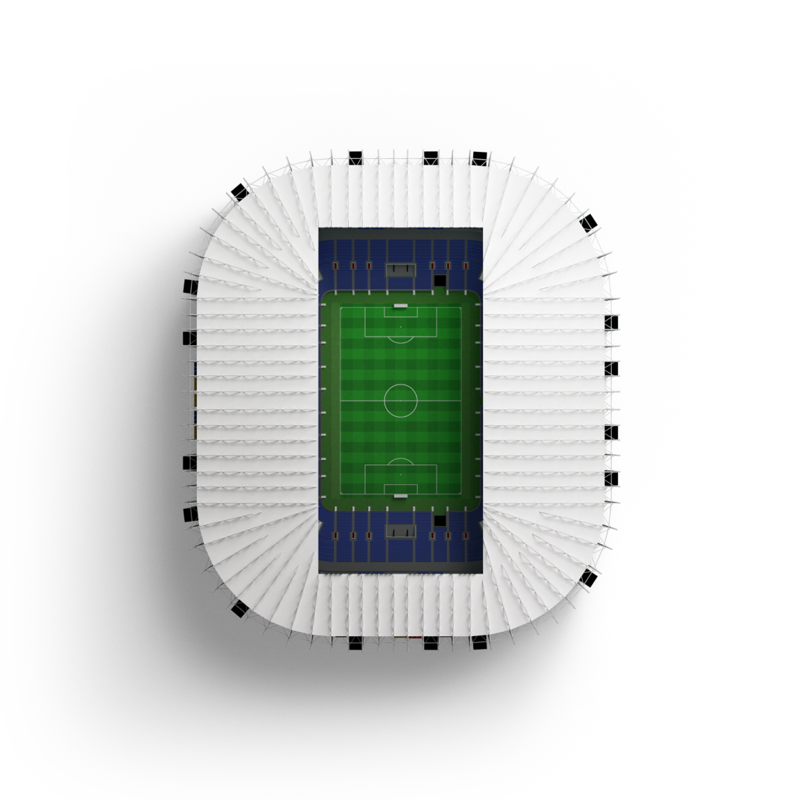

Différents services tels que les bureaux administratifs, le service commerciaux, le service comptabilité et le service audiovisuel ont besoin d'une connexion internet et l'accès à des ressources spécifiques.
Équipements nouvelle génération (routeurs, switchs), fibre haut débit, réseau hautement disponible et sécurisation renforcé pour tout services. Une architecture hiérarchique en étoile permettant la haute disponibilité du réseau.
Évolution des systèmes & réseaux avec facilité, sans interruption réseau ni impact sur les services déjà en place. Si un nouveau service ou une nouvelle solution vient à être validé, l'administrateur réseau doit l'implémenté sans difficultés.
Phase de test sur machines virtuelles avant la mise en production. Cette étape est primordiale afin de tester si la solution choisie est optimale, fonctionnelle et sécurisée.
Gestion d'un Active Directory, des GPO et des services (DHCP, DNS, DFS, Partage de fichier) sur Windows Server 2019.
Trace écrite de toutes les manipulations faites, plan d'adressage, schéma réseau, Arborescence AD.
Se tenir informé des dernières actualités. Veille informationnelle via fluxRSS, google actualités, LeMonde.
Scripts powershell pour Windows Server, scripts textuels pour switchs.
Chef de projet, travail en équipe, répartition des tâches, efficacité de travail, diagramme de Gantt (planification de tâches).
Configuration Switch Accès, Coeur, VLAN & SVI, Routeur Stormshiel (NAT), Routes
Bonne maîtrise du logiciel. Packet tracer est un simulateur de matériel réseau Cisco.
Bonnes pratiques Active Directory, Switchs (SSH), VLAN, ACL's, Logs (RSyslog) pour la sécurisation d'un réseau.
Mise en place d'un DNS (Bind9), Proxy/Reverse Proxy, Serveur Web Apache2 et MariaDB sous Debian11
Tu as trouvé le petit secret de mon site :) J'ai commencé à le coder en août 2022 et fini le 17/2/2023.